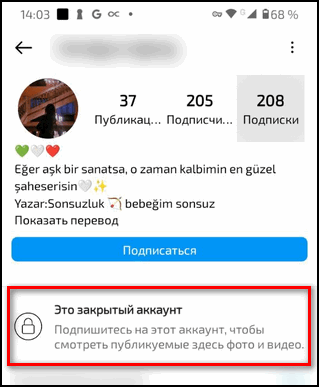
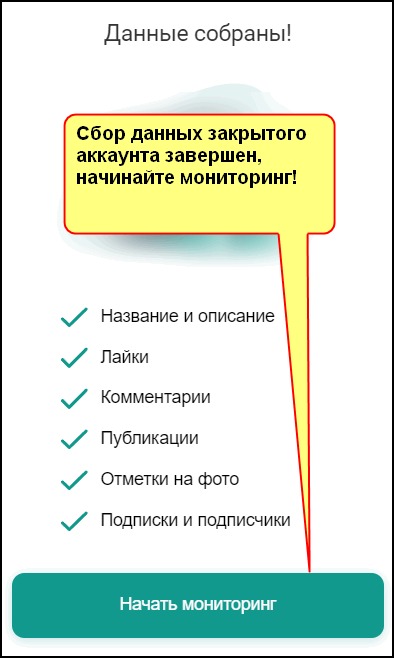
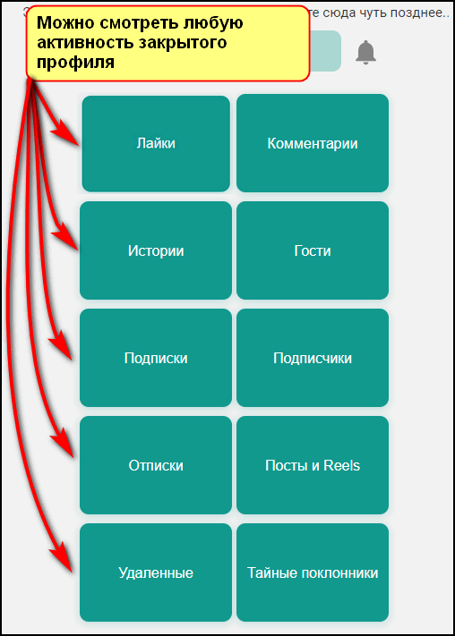
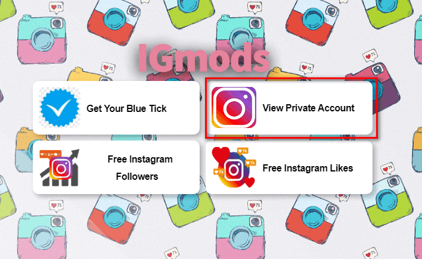
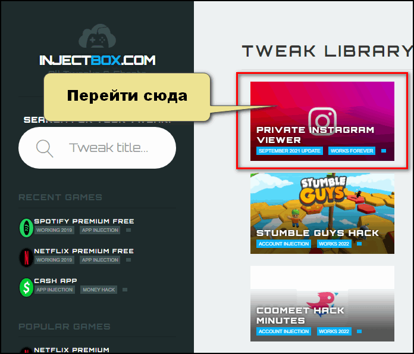
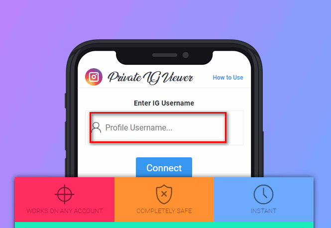

Как посмотреть закрытый профиль в Инстаграме анонимно и онлайн - 4 способа

Политика конфиденциальности в социальных сетях запрещает просмотр скрытого или платного контента, без предварительного выполнения условий. Поэтому смотреть закрытый профиль в Инстаграм* анонимно не получится через обычный поиск и даже личный аккаунт, тут нужны специальные сервисы, расскажем ниже.
Особенности закрытого и открытого профиля
Инстаграм* устанавливает правила для пользования социальной сетью, а также возможность скрывать свой контент от посторонних. Есть два типа учетный записей:
- закрытый. Публикации можно посмотреть только после подписки и подтверждения владельца;
- открытый. Все записи доступны переходя по ссылке или найдя человека в поиске.
Для скрытых страниц недоступны бизнес-функции, они не выдаются в рекомендуемых публикациях. Есть и преимущества: обладатель приватного статуса может выбирать, кто получит доступ к его контенту. Иногда закрытые страницы используют для платных публикаций, создания интернет-магазинов.

Главный недостаток приватной страницы – посмотреть, что опубликовал автор не получится. Переходя в такой профиль, другой человек увидит надпись: «Закрытый аккаунт. Подпишитесь». Если нужно анонимно посмотреть такую страницу – стоит воспользоваться дополнительными способами с возможностью отслеживания историй другого человека.№1 способ, как посмотреть приватный аккаунт в Инстаграме*
Смотреть приватный Инстаграм* анонимно проще всего через фейка. Это дополнительная страница, которая может быть привязана к тому же номеру телефона, что и основная. Фейковый аккаунт часто маскируют под магазин, красивых молодых людей или профиль с познавательным контентом. Проблема лишь в том, что получив запрос на подписку, владелец нужного аккаунта может отклонить просьбу.
Просмотр чужого профиля через фейка:
- Зайти в Инстаграм* - нажать сверху по значку с тремя полосками.
- Выбрать : «Настройки» - выйти из текущего профиля.
- Перейти к регистрации другого – придумать логин и пароль.
- Добавить аватар – указать номер телефона или email.
- Подтвердить регистрацию – перейти в профиль и загрузить пару изображений.
После того, как страница будет заполнена, можно переходить к поиску и подписываться на нужного человека.
№2 Через сервис Инсташпион
Сервис Инсташпион – это быстрый просмотр закрытых аккаунтов, возможность получить доступ к чужим Историям, гостям и постоянным посетителям. Собирает общую базу, которую можно обновлять ежедневно, чтобы не пропустить новый контент. Пробуем Инсташпион для анонимного просмотра приватной страницы:
- Зайти в сервис и попробовать бесплатно можно по нашей ссылке.
- Ввести никнейм пользователя, которого нужно найти.
- Подождать пока прогрузится база.

Далее появится список разделов, которые можно просматривать анонимно. Для работы с Инсташпионом не нужно подключать личный Инстаграм*-профиль, что делает просмотр еще более скрытным.
После прогрузки разделов можно перейти к перечню гостей, поклонников, Историям и Актуальному. Владелец искомого аккаунта не узнает, что его публикации были просмотрены кем-то, кто не подписан. Но чем больше постов на чужой странице, тем больше времени понадобится Инсташпиону, чтобы проанализировать данные. Загрузка постов занимает от 5 минут до нескольких часов.

Еще одно из преимуществ сервиса: просмотр комментариев и лайков, которые были получены и отправлены. Такой способ поможет отследить, с кем человек чаще всего взаимодействует и общается.Смотреть закрытый профиль в Инстаграме* без регистрации в самой социальной сети – также возможно через Инсташпиона.
№3 IGMods: для Android и iOS
IGMods – это модификация для социальной сети, которая позволяет смотреть скрытые публикации. Чем больше записей, тем дольше бот будет проверять. Внимание: такой способ может быть небезопасным при скачивании материалов с сайта IGmods.com. Как использовать:
- Перейти на сайт IGMods – выбрать на главной пункт: «ViewPrivateAccount»
- Ввести в поле никнейм пользователя – подождать, пока появится сообщение о том, что страница найдена.

- Подтвердить и убедить, что данные были введены верно.
- Дождаться уведомления: «Личные данные успешно разблокированы».
- Найти в Инстаграме* этого пользователя: страница должна быть доступна.
Просмотр в этом случае не будет анонимным, зато появится доступ ко всем публикациям, которые ранее были скрыты. Способ работает на устройствах Android и iOS. Единственное, что нужно от пользователя – посещать сайт только с мобильной версии.
№4 Помощник InjectBox
Такой же сайт, для того чтобы смотреть Инстаграм* аккаунт анонимно. Перейдя на сайт, нужно выбрать: «Show hidden account». Сервис ищет страницу и показывает картинки без дополнительного подключения к социальной сети. Инструкция к действиям:
- Перейти в InjectsBox – выбрать первый пост: «Unlock Instagram* Profile».
- Ввести никнейм человека, которого нужно отыскать.

- Подождать, пока завершится загрузка.

- Ввести капчу – аккаунт станет доступным для просмотра.
После ввода капчи пользователь должен убедиться, что сайт не требует скачивания дополнительных материалов. Это один из вариантов, как смотреть Инстаграм* анонимно. В InjectBox не придется переходить в приложении и заново искать человека. В небольшом окне на сайте будут показаны публикации, а также у зрителей есть доступ к двум функциям: показать только фото или разблокировать весь профиль.
Почему в Инстаграме* недоступны скрытые профили
В социальной сети высокие требования относительно конфиденциальности и исполнения правил. Помимо того, что владелец страницы может полностью скрыть контент, он может выбрать подписчиков, которым не будут доступны те или иные записи. Относительно Историй: можно создать отдельную группу пользователей, которые смогут просматривать информацию. Зачем в Инстаграме* существуют закрытые страницы:
- повышение безопасности личных данных;
- помощь подписчикам в создании благоприятной и позитивной среды для общения;
- возможность общения для людей с разными взглядами.
Идея закрытых аккаунтов состоит не в эксклюзивности, а в защите персональных данных. Поэтому, получить доступ к чужому скрытому профилю сложно, даже если применять дополнительные утилиты или приложения.